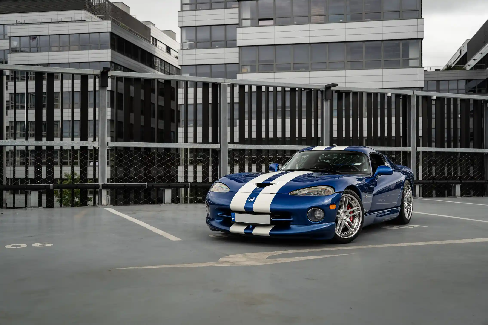
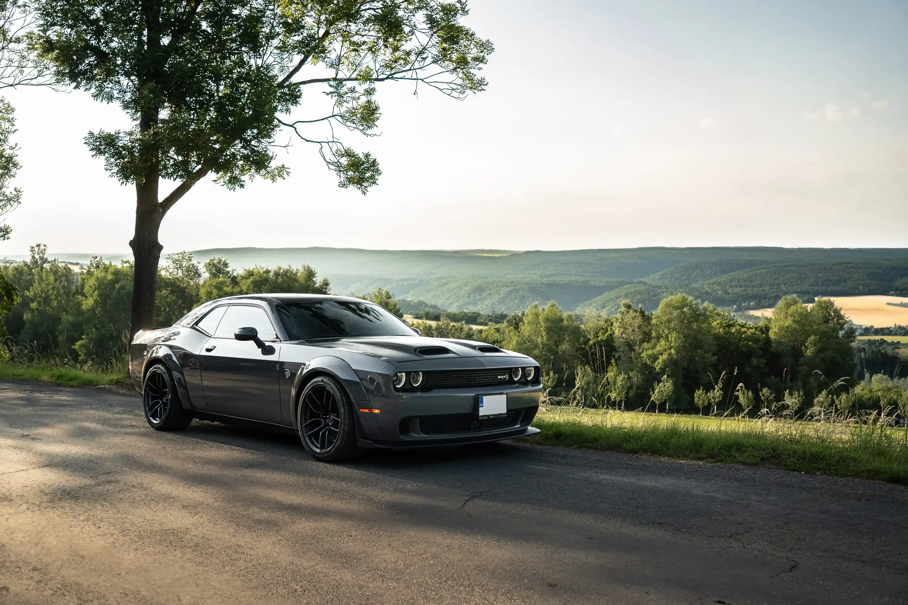
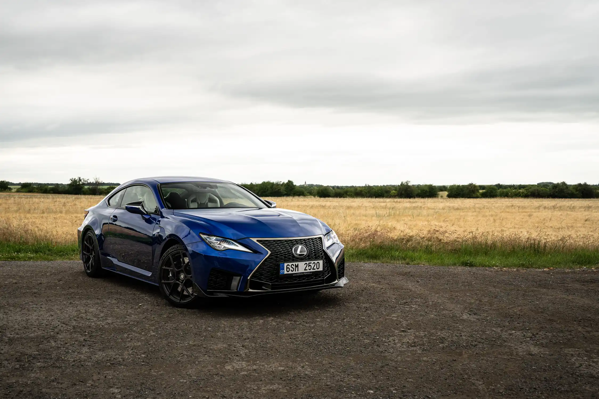

About Me
Hi, I’m Ian Martin Branam, a passionate photographer specializing in automotive and architectural photography. My work focuses on capturing the unique essence of motion and structure with creativity and precision.
Specialties
Recent Projects

DODGE VIPER
A raw American icon, defined by aggressive lines and pure power.

DODGE CHALLENGER SRT
Modern muscle with a retro soul, built to dominate streets and tracks.

LEXUS RCF
A refined Japanese coupe blending luxury with V8 performance.